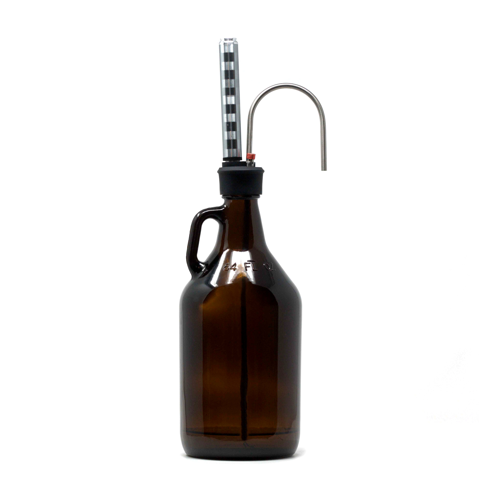

Growlers
Just in case you were wondering...
What's a Growler?
A growler ('grau̇-lər) is a glass, plastic or metal jug that can be filled with your favorite beer to-go.
The typical size is 64 ounces (1,89 litres), but you may find bigger or smaller ones with different shapes.
They must always be cleaned thoroughly before refilling, usually at the brewery or refilling point.
Growlers are the best alternative when buying craft beer, to enjoy it anywhere with the lowest environmental impact.
